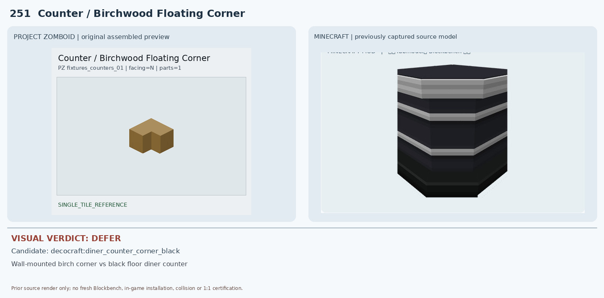
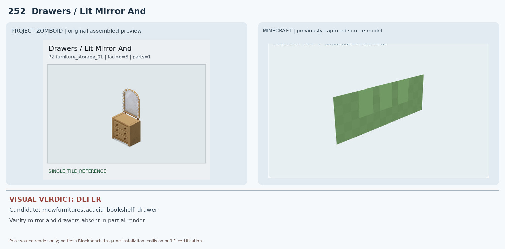
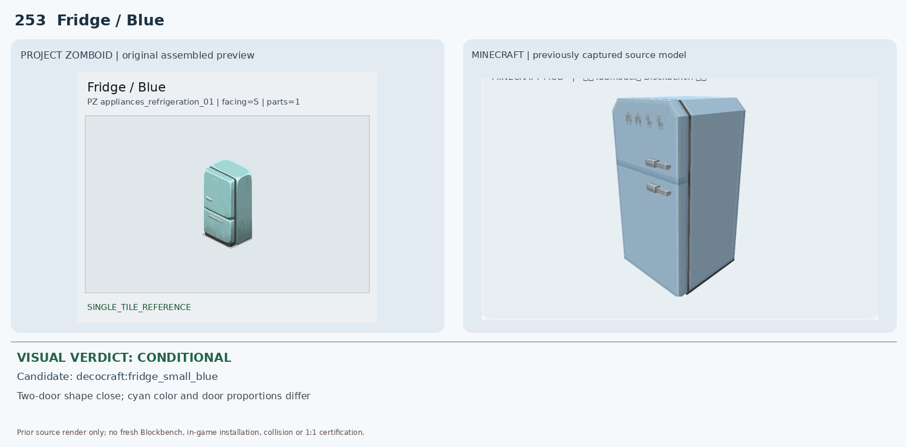
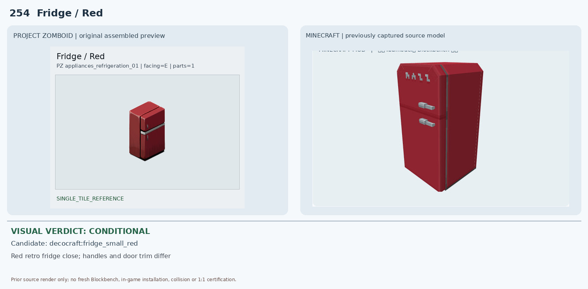
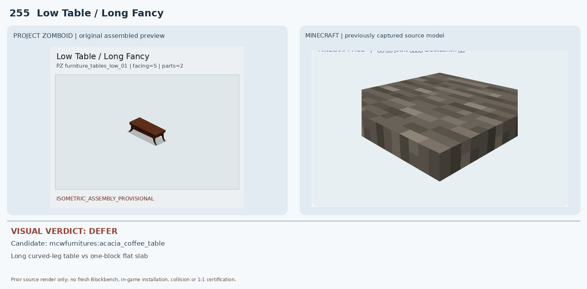
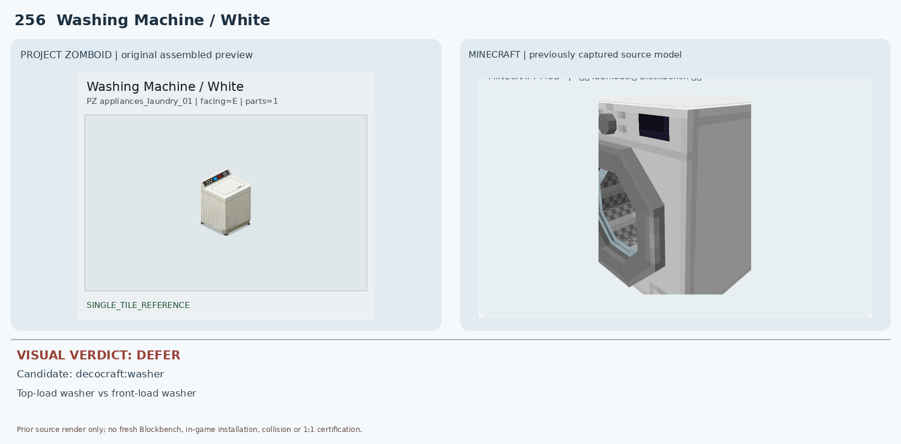
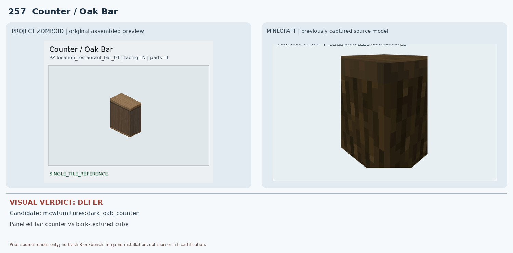
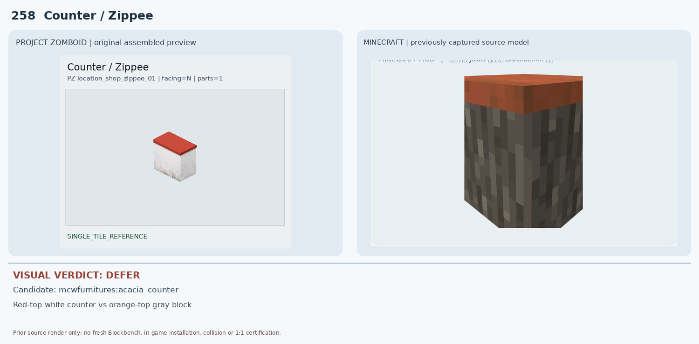
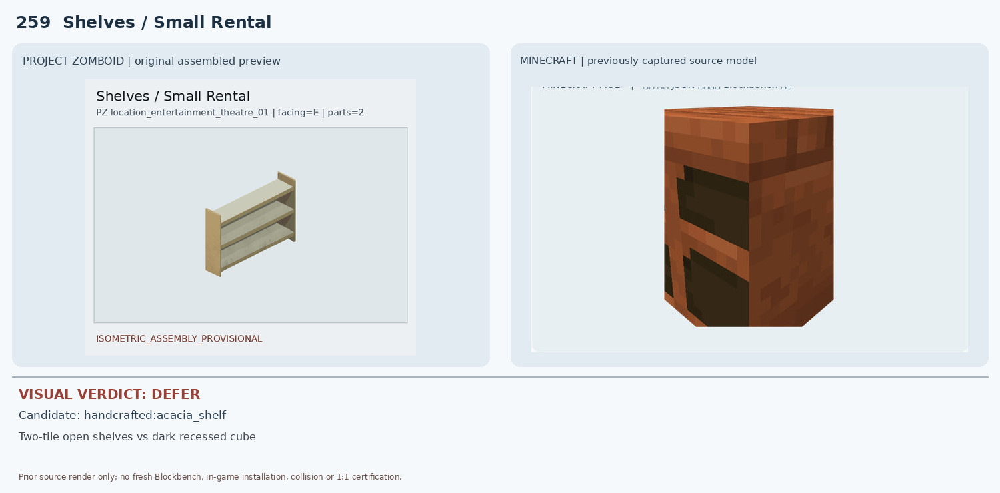
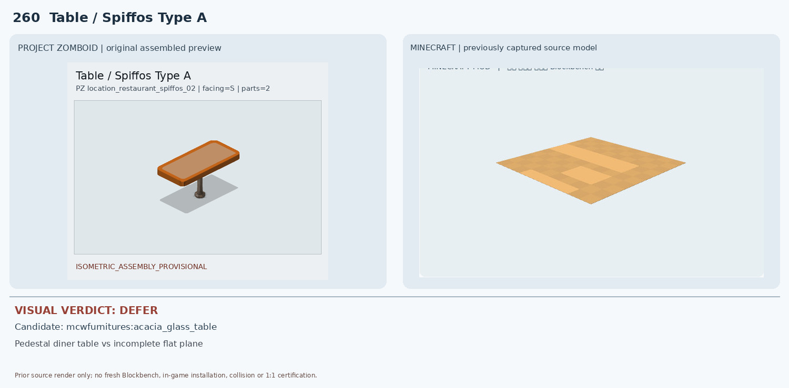

251 Counter / Birchwood Floating Corner — DEFER

PZ 원본은 밝은 자작나무색의 높은 벽걸이 ㄱ자 코너 수납장(IsHigh, WallObject)인데 Decocraft 후보는 검은색/흰 줄무늬의 바닥형 식당 카운터 코너다. 코너 윤곽만 일부 유사하고 재질·색상·설치 높이·수납 구조가 다르다.
2 conditional, 8 deferred. Existing source render evidence only; no new native render or in-game certification.

PZ 원본은 밝은 자작나무색의 높은 벽걸이 ㄱ자 코너 수납장(IsHigh, WallObject)인데 Decocraft 후보는 검은색/흰 줄무늬의 바닥형 식당 카운터 코너다. 코너 윤곽만 일부 유사하고 재질·색상·설치 높이·수납 구조가 다르다.

PZ는 3단 서랍과 조명이 달린 거울이 결합된 화장대다. 후보 Blockbench 비교는 녹색 평면 하나만 나타나는 불완전 JSON 렌더로 서랍·거울·조명이 전혀 확인되지 않는다. 부분 렌더를 완성 모델로 승인할 수 없다.

Decocraft의 청색 소형 2도어 냉장고는 전체 외곽, 높이, 냉장고 문 2개 구조가 유사하다. 그러나 PZ는 청록색이며 상하 문 비율·문턱 위치·손잡이 형태가 다르고 후보는 더 탁한 회청색이다. 조건부 외형 후보만 유지한다.

Decocraft의 적색 소형 2도어 냉장고는 빨간 외장·상단 작은 문/하단 큰 문 구조가 유사하다. 하지만 PZ는 더 둥글고 은색 가로 띠가 두드러지며 후보는 손잡이가 전면으로 튀어나오고 문 비율·테두리가 다르다. 조건부 외형 후보만 유지한다.

PZ는 2타일 길이의 진갈색 곡선 다리 장식 테이블이다. Macaw's 후보는 1블록 크기의 회갈색 얇은 정사각 슬래브만 보여 다리·곡선 장식·2×1 길이·목재 색상이 불일치한다.

PZ는 위로 여는 탑로더 세탁기이고 Decocraft 후보는 전면 원형 투입구와 앞쪽 조작판이 있는 프런트로더다. 핵심 투입 방향·뚜껑·조작 패널이 달라 대체 불가.

PZ는 밝은 목재 상판과 어두운 세로 판넬, 바닥 테두리가 분리되어 있다. Macaw's dark oak 후보는 거의 전체가 짙은 통나무 질감의 단순 큐브로 밝은 상판·수직 패널·하부 몰딩이 없다. 이름과 재질 계열만 유사하다.

PZ는 선명한 빨강 상판과 흰색 하부가 특징인 카운터다. 후보는 오렌지/갈색 상판 아래 회흑색 석재·목재 질감의 큐브이며 흰 하부가 없다. 색상·재질·모서리 형상이 불일치한다.

PZ는 2칸 길이의 밝은 개방형 3단 선반이다. Handcrafted 후보는 붉은 아카시아색 1블록 높이 큐브의 검은 전면 홈 2개로 보이며, 양끝 기둥/3단 긴 선반/2타일 조립이 확인되지 않는다. 원본 JSON의 누락 부모 참조도 재확인 필요.

PZ는 2타일 길이의 직사각 식당 테이블로 주황 테두리·중앙 금속 받침이 있다. 후보의 Blockbench 화면에는 얇은 밝은 목재 평면만 나타나며 다리/받침·주황 테두리·2타일 연결이 확인되지 않는다. 부분 JSON 렌더는 완성형 증거가 아니다.